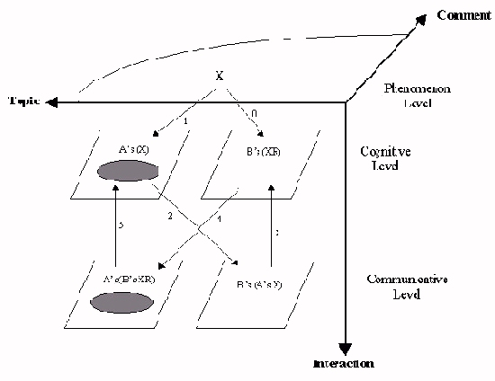
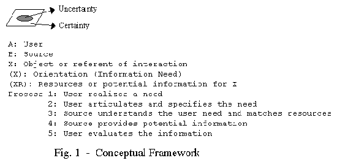
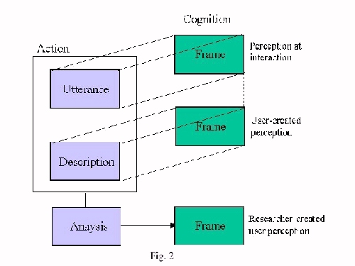

| |
|
|
|
The use of certainty and the role of topic and comment in interpersonal
information seeking interaction
Kyunghye Yoon
School of Information Studies
Syracuse University, USA
kyyoon@syr.edu
Problem Statement
The cognitive
aspect of IS involves both the certainty and uncertainty aspects of a user
need. Certainty refers to what a user knows or what she thinks she knows
such as her experience, knowledge, beliefs, goals and plans. Whereas
uncertainty refers to what the user is aware of not knowing, thus needs to
find out, that is often called an information need or a cognitive gap
[Dervin, 1983]. The certainty and uncertainty constitute in the user's
perception of her IS situation. Uncertainty is defined in terms of
certainty of what she perceives regarding to the situation. Users employ
certainty in order to point out what they don't know and thus need to find
out, uncertainty. Uncertainty has been focused on as an information need in
many studies in the field of information. The certainty aspect, however,
has not been explicitly addressed even though it is inherent to human
cognition that is the source of IS behavior. Therefore, it is proposed to
investigate the certainty aspect of a user need in an IS interaction by
looking at how users employ what they know when they point out what it is
that they want to know.
The communicative
domain of IS underlies the use of language in articulating the user's
meaning and perception of the need situation. That is, the perception of a
user is communicated to the source person through language in a meaningful
way that is intended to enable the source person to understand the need and
provide information to the user. It is necessary to look at the linguistic
articulation as a way to understand the internal cognition of user
perceptions. The linguistic articulation is a means to connect the user
need to information contents and to share a meaning between a user and a
source person. Therefore, in this study it is also proposed to look at the
linguistic description of a user in the IS interaction with a source
person.
The linguistic
articulation is composed of two dimensions, "topic" and "comment" which
provide a simplified but working model for information (and information
need) dimensions. Topic here means what a person is talking about. It is
the subject that the person wants to communicate. Comment relates or
situates the topic to an individual perspective and context so that it
constitutes a meaningful utterance. Both are necessary for any meaningful
articulation. In traditional information retrieval, the topic component has
been used to represent information contents as a matching criterion.
Information is represented in terms of what it is about, such as a keyword
or subject heading and retrieved via the topic aspects of a user query. In
specifying their need, however, users try not only to share what it is they
need to find out, (i.e., topic), but also to share what it means to them,
such as, why they need it, what they feel about it, how it would fit in
their situations, what they have tried, etc. Comment aspects include
personal value, task or problem, and stages in the IS process as well as
situational factors. It is called "comment," rather than a context or a
situation, in contrast to a topic because comment linguistically includes
the broader user's perspective than situation. This study will provide
identifiable dimensions of comment from the users' descriptions of their
need that can be employed as an alternative criterion to topic on which the
traditional matching between a user need and information content has been
based.
Background Concepts
Most cognitive
research in the field takes the uncertainty aspect of user cognition into
account to represent the concept of information need. In much research,
information need is called uncertainty [Dervin, 1983], [Kulthau, 1993], anomalous
state of knowledge (ASK) [Belkin, et al., 1982], Cognitive gap
[Dervin, 1983], [Dervin & Nilan, 1986] or visceral need [Taylor, 1968] . That
is, the notion of uncertainty presents a lack in cognitive resources of a
user, emphasizing a cognitive state of 'not knowing' (or 'not being
informed'). In the concept of certainty, a user's knowledge or cognition is
considered. In the review of cognitive research, Allen described the user's
knowledge such as general world knowledge, task knowledge, system knowledge
and domain knowledge [Allen, 1991] but there is no agreed upon conceptual
definition and, when employed, has been applied in different ways. In spite
of the general consensus on the importance of certainty aspects such as a
user's knowledge, perception and belief [Belkin 1990, 1984], [Wilson 1984, 1981],
there is little existing literature that empirically deals with the notion
of how what a user knows affects IS. The closest examples would be the
redundancy corollary [Kulthau, 1993] and the candidate answer [Pomerantz, 1995]. Kulthau explained her uncertainty principle using redundancy corollary that
a user's knowledge or experience enables a user to identify relevant
information in terms of whether it is redundant or unique. Candidate
answers provided by the user at the time an information request makes use
of what a user already knows in the search. These merely provide clues to
support the role of certainty.
Given that
certainty is involved in user perception of information need, this study
explores and seeks out a balance between what is known in the contents of
information and in the user's perception. There has been a mismatch in
research in system design and user studies in general because one is
centered on what has been known about content whereas the other is focused
on what is not known by the user. There is a need to empirically
investigate the concept with a coherent and systematic conceptual
definition at a higher level abstraction to encompass the user's perception
of experience and the user's projection of the situation into the future.
This study is an attempt to bridge the gap between research in system
design and in user behavior by specifically looking at the dimension of
comment as a source of supplementing matching criteria for information
retrieval.
The topic and
comment are at the level of social interpersonal communication behavior,
which can provide shared basis for system implications while the certainty
and uncertainty alone are specific and subjective to an individual user.
This study deals with human interpersonal interaction as a kind of IS
process where the user and the source communicate as the most universally
available and original form of human communication. IS, in its fundamental
sense, is a human problem of making sense and sharing it. The terms topic
and comment are from earlier functional linguistics as the two necessary
components of a linguistic utterance [Hymes, 1974]. They are applied in this
study to represent two dimensions of an information need from the user's
articulation of the need. As mentioned above, topic has been adapted in
information field as matching criteria between a user need and information
content. Lately, topic matching has been questioned as insufficient for
effective information retrieval [Mizzaro 1997], [Green, 1995], [Froelich, 1994],
[Harter, 1992] , [Saracevic, 1991]. The topical basis is getting too a cured
criterion, especially in the recent advancement with more complicated
technology and overload of information contents in the computerized systems
and network environment. In fact, many relevance studies have pointed that
topical relevance alone is not a complete criteria, and provided relevance
criteria other than topical basis such as user-based, situational, and
psychological relevance, mostly based on the user's perception of the need
situation [Park, 1994], [Bruce, 1994], [Barry, 1994, 1993], [Schamber, 1992]. In this
sense, there is a need to explore the IS interaction to provide alternative
matching criteria to supplement the topical dimension. This study attempts
to explore the comment dimension from the user's linguistic articulation of
a need. The alternative criteria from user comments are proposed on a
theoretical basis of linguistic functions rather than an ad hoc
approach.
Conceptual Framework
A conceptual
framework was developed in order to provide a coherent and structured
conceptual basis for the research questions and for designing the research
methodology. A simplified process of person-to-person IS interaction is
first described as the contextual basis for the study on which the
conceptual framework is developed. The interaction starts when a user comes
to a source person such as medical or health practitioner or job counselor,
with a need or a problem in her mind. First, she talks about her problem or
asks questions and the source tries to help the user. The source may ask
questions in order to understand the user's need but in general it is
assumed that the user has questions and the source provides answers.
Second, the source creates her own understanding of the user problem then,
using her past experience and resources, the source provides what she
knows. Last, the user evaluates what the source has provided comparing it
to her original need. She may be satisfied or she may have another question
but at some point she would end the interaction.
The conceptual
framework incorporates the major concepts in the study within the
contextual basis of interpersonal IS process, described above. Fig. 1
provides a way to develop an observable construct in the context of the
study. As IS is not only a mental and cognitive process but also a social
and linguistic process, language is used as a means to convey the meaning
resulting from the mental process. At the phenomenal level, information is
assumed to be represented in terms of topic and comment dimensions because
information is represented in linguistic form. At the cognitive level, the
individual perception is focused on certainty and uncertainty depending on
the person's awareness. The communicative level includes the other levels
but is more focused on the use of language. At the communicative level, the
perception is expressed with a linguistic articulation so that it is
available to the other person. Language is the means of bridging the
cognitive and communicative levels where it is possible to share mental
pictures.


Research Questions
A general research
question is: "what is the meaningful description of employing certainty and
uncertainty (C/U) aspects of a user need with linguistic use of topic and
comment (T/C) in an interpersonal IS interaction?
Under the general
research question, specific research questions are:
- What are the characteristics of employing certainty in relation to uncertainty in an IS interaction (at the cognitive level)?
- What are the descriptions of the comment dimension (as distinguished from topic) in the articulation of a user's information need specification that can be identified across information users (at the linguistic level)?
- Are there attributes of the comment dimension in association with the specific use of certainty characteristics, which are, defined in RQ 1 and RQ 2? (Certainty is described at the level of linguistic communication.)
- Are there behavioral patterns of employing certainty vs. uncertainty (C/U) or comment vs. topic (T/C) overall in articulating information need specifications that are identified across the users as general strategies?
- Is the conceptual framework defined in the study useful in exploring IS phenomena?
Methodological Approach
The nature of this
study requires a descriptive approach to the phenomena. The methodology
takes a user-based method incorporating a modification of Dervin's
Sense-Making approach in an attempt to understand users' cognition and
perceptions from their points of view [Dervin, 1983]. The user-based approach
allows a researcher to create a perspective constructed from descriptive
accounts of users from their own perspectives. The methodological design
relies on indirect observation of users' internal perceptions from
observable articulations of information need. A conceptual construct called
a "frame" [Goffman, 1975] was adopted as a way of looking at the internal
cognitive behaviors. A frame is what a user "views" internally in her mind
at the time of IS interaction.
The researcher
generates a frame of a user based on what the user provides via
articulation and subsequent description. A frame consists of an utterance
which is an operationalization of an articulation a user makes in the IS
interaction with a source person that is assumed to represent the user
perception. An utterance is what a user is saying in an IS interaction with
a source person. It is observable to the researcher and allows a reasonable
inference of the user's internal cognition. But an utterance may only
represent a part of a frame because not all of the user's meanings are
articulated at once. Some important meaning may remain unstated in the
interaction. These withheld meanings can be further articulated by
debriefing questions after the interaction. That is, the researcher will
interview the user after the interaction employing the transcript of the
user's utterance in the interaction. Fig. 2 shows a simple graphic
denotation of method design of the study.
Operationally a
frame is defined as what a user articulates at specific points in time
during IS interaction that will consist of an utterance and additional
descriptions from a debriefing interview. An utterance is what is said by a
user in between what the source person says in the interaction. Since the
focus of the study is on individual perception, the unit of analysis is a
unit of meaning within an individual, i.e., an utterance.

Setting and Samples
The setting of the
study is a face-to-face IS interaction between a user and a source person
in a real situation for any kind of IS. A real situation was chosen because
IS should be understood as a natural human behavior which occurs in daily
life. It is more important to obtain unobtrusive data in a more
naturalistic way for this type of exploratory study rather than to control
other factors in a more artificial context. Respondents will be recruited
from Syracuse University classrooms for their own IS for either personal or
class project situations with a little monetary reward for their
time.
Data Gathering
The procedure for
data gathering consists of 3 phases. Phase 1 is audio recording of the user
and source interaction. The interaction will be audio recorded and then
transcribed. Phase 2 is a debriefing interview with the user. The user will
be asked general questions about the IS situation and asked to clarify each
utterance of hers in the interaction. Phase 3 will be a content analysis of
open-ended data gathered in phases 1 and 2. The first set of data yielded
in phase 1 will provide the basis for the following method with the IS
interaction transcript. At phase 2, the second set of data will be a
descriptive account of users. At this stage, the researcher would have to
rely on the user's ability to recall the interaction and to provide an
accurate account rather than making something up. The utterances from the
first set of data will be used as a reference to help respondents' recall
the process and organize their description. The interview will ask a set of
questions for each utterance so that the user clarifies each utterance as
certainty or uncertainty aspect and describes their utterance as either
topic or comment. The debriefing will allow the researcher to provide
additional description of the user frame rather than making up rationales
or motivations justifying the user's actions. At phase 3, the raw data from
open-ended question will be refined for data reduction and representation
by the researcher's coding process.
Data Analysis
The analysis of
data follows data representation in order to examine the conceptual
typology proposed in the study by answering the research questions. The
method of data analysis is consistent with the conceptual research aims and
methodological approach. This study stands in between the "exploratory
descriptive" and "organized descriptive" studies [Simon, 1985 pp51-72] as it
is based on a working framework of conceptual structure but also relies on
inductive exploring of the concepts and relationships among them. The
results of data analysis should yield a various form of description to
illuminate patterns in user's IS behaviors. The analysis is dependent on
the results of content analysis which reversibly depends on the general
data analysis method. The plan for data analysis is based on each research
question.
For the RQ1, the
user answer for the aspects of certainty or uncertainty of their utterance
at phase 2 will be described using simple descriptive statistics. The
content analysis for the user's description of employing certainty and
uncertainty will be compared across the users. The certainty is
operationalized in terms of past experience, present value, future
anticipation and interactional learning according to Nilan and
Rosenbaum (1990). For RQ2, same procedures apply for the topic and comment.
Topic is operationally defined as the subject of the need situation. The
concept of comment is defined as user's description of how the statement
(utterance) is related to the topic. For RQ3, the relationship between the
two concepts certainty vs. uncertainty and topic vs. comment will be
related across users. For RQ 4, the sequence of user frames in terms of the
concepts of certainty vs. uncertainty and topic vs. comment will be
examined and compared across users. RQ5 is addressing the question of
evaluation that can be answered after the interpretation of data analysis.
If RQs 1-4 confirm the idea of using certainty and comment, the
relationship among concepts or the sequence pattern across users then it
will indicate that the conceptual framework is valid.
In conclusion,
this research is expected to provide a meaningful description of certainty
and uncertainty in a user's IS situation, attributes of comment dimension
and clues for patterns in interpersonal IS interaction across users. The
generalization of the results would be limited to the population of the
study but the implications for human behavior might be applied to other
user groups because the concepts of certainty and uncertainty and topic and
comment are fundamental to human behavior and valid to any kind of
context.
References
- Barry, C. L. (1994). User-defined relevance criteria: an exploratory study. Journal of the American Society for Information Science, 45(3), 149-159.
- Belkin, N. J. (1984). Cognitive models and information transfer. Social Science Information Studies, 4, 111-129.
- Belkin, N. J. (1990) The cognitive viewpoint in information science. Journal of information Science, 16, 11-1
5.
- Belkin, N.J., Oddy, R.N., & Brooks, R. (1982) ASK for information retrieval: Part1, Journal of Documentation, 38 (2), 61-71
- Bruce, H. W. (1994). A cognitive view of the situational dynamism of user-centered relevance of inquiry. Journal of the American Society for Information Science, 45(3), 142-148.
- Dervin, B. (1983) An overview of sense-making research: Concepts, methods and results to date. In Annual
meeting of the International Communication Association, Dallas, Texas.
- Dervin, B. & Nilan, M.S. (1986) Information needs and uses. Annual Review of Information Science and
Technology, 21, 3-33.
- Froelich, T. J. (1994) Relevance reconsidered - towards an agenda for the 21st century: introduction to special topic issue on relevance research. Journal of the American Society for Information Science, 45(3), 124-134.
- Goffman, E. (1975). Frame Analysis: An essay on the organization of experience. Cambridge, Mass.: Harvard University Press.
- Green, R. & Bean, C. A. (1995) Topical relevance relationships. II. An exploratory study and preliminary typology, Journal of the American Society for Information Science, 46(9) 654-662
- Harter, S. P. (1992). Psychological relevance and information science. Journal of the American Society for Information Science, 43, 602-615.
- Hymes, D. (1974) Toward ethnographies of Communication in D. Hymes (Ed.) Foundations in Sociolinguistics: Philadelphia, Pa: University of Pennsylvania press
- Kuhlthau, Carol C. (1993) Seeking Meaning: A process approach to library and information services. Norwood, NJ Ablex Co.
- Mizzaro, S. (1997) Relevance: the whole history. Journal of the American Society for Information Science, 48(9), 810-832
- Nilan, M. S., & Rosenbaum, H. (1990) An epistemology for sense-making research [1] (Unpublished Paper)
Syracuse University.
- Park, T. K. (1994). Toward a theory of user-based relevance: a call for a new paradigm of inquiry. Journal of the American Society for Information Science, 45(3), 135-141.
- Pomerantz, Anita (1988) Offering a candidate answer: an information seeking strategy, Communication Monograph
55, 360-373
- Saracevic, T. (1991) Individual differences in organizing, searching and retrieving information. Proceedings of the 54th Annual Meeting of the American Society for Information Science, 28, 82-85.
- Schamber, L. (1991) User's criteria for evaluation in a multimedia environment. Ph.D. Dissertation, Syracuse university.
- Simon, J. L. (1969) Basic research methods in social science: the art of investigation. New York: Random
House.
- Taylor, R. S. (1968) Question-negotiation and information seeking in libraries. College and Research Libraries, 178-194.
- Wilson, T. D. (1981) On user studies and information needs. Journal of Documentation, 37, 3-15.
- Wilson, T. D. (1984) The cognitive approach to information-seeking behavior and information use. Social Science Information Studies, 4, 197-204.
Information Research, Volume 4 No. 2 October 1998
The use of certainty and the role of topic and comment in interpersonal
information seeking interaction, by Kyunghye Yoon
Location: http://InformationR.net/ir/4-2/isic/yoon.html © the author, 1998.
Last updated: 16th September 1998
|